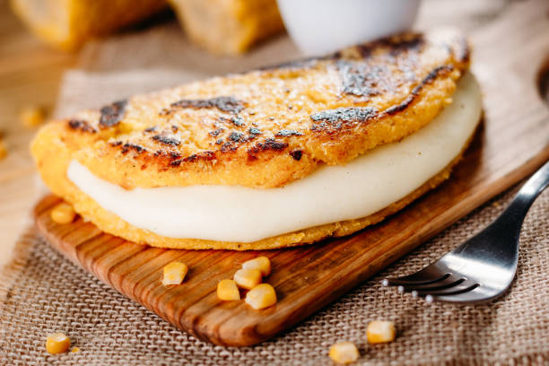

Cachapa

Ingredients
for about 4-6
- 500 grams Fresh corn (kernels)
- 1/2 cup Milk
- 2 Eggs
- 2 tbsp Sugar
- 1 tsp Salt
- 2 tbsp Pre-cooked corn flour
- 1 tbsp Wheat flour
- 1 tbsp Butter or margarine
Steps
- Place the fresh corn, milk, eggs, sugar, salt, and the tablespoon of melted butter in the blender. Blend at medium speed for a couple of minutes.
- Pour the mixture into a bowl. Add the spoonfuls of precooked corn flour (or wheat flour) and stir well with a spoon. Let the dough rest for 5 to 10 minutes.
- Heat a non-stick skillet or a "budare" over medium-low heat.
- Wipe the hot surface with a paper towel moistened with a little oil or a piece of butter to prevent the batter from sticking.
- Let it cook for 3 to 5 minutes on each side.
Home